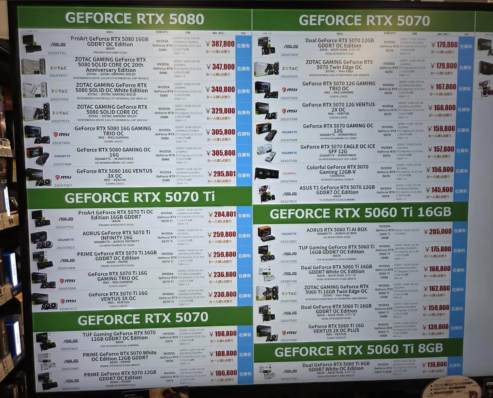

이제 100만원 미만 그래픽카드는 존재하지않음
아 5050은 그래픽카드가 아니라 DLSS 표시기 같은거니까 패스
그런데 곧있으면 5080은 40만엔찍을것같은데 ㄷㄷㄷ

이제 100만원 미만 그래픽카드는 존재하지않음
아 5050은 그래픽카드가 아니라 DLSS 표시기 같은거니까 패스
그런데 곧있으면 5080은 40만엔찍을것같은데 ㄷㄷㄷ
3090아 버텨줘ㅜㅜ
9070XT 써라
응 1070도 잘만 돌아가~~
이거학대야
??? : 제...제발...주...죽여...줘...
일본은 전자제품이 한국보다 비싸던데
일본 가서 온라인/오프라인 매장에 마음에 드는 키보드랑 마우스 찾았는데 모두 한국이 훨씬 싸더라
보증기간 끝난 30 40번대 카드가 있다면 gpu써멀구리스 패드형으로 재도포 추천
3080쓰다가 점점 소음이 커졌는데 패드형으로 바꾸고 나서 소음과 온도 둘다 잡았음 아직 5년은 더 써도 될듯
Ptm7950 말하는건가
ㅇ 맞어 그거
9070xt 80에 주웠었는데 qhd에서는 엥간한건 다되서 그냥저냥 만족함..
ㅈㄴ 잘주웠네
어? 나두나두~
롤만해서 2060으로도 떡을친다
너도? 나도
아 5080 살걸
하긴 저기 환율 개박살났을테니
아 엔이구나 왜 저렴하지 생각했네
조금만 더 힘내자 내 1060아
콘솔공화국이 될 수 밖에 없는 운명..
작년 추석에 5080 샀으면 승자임?
지금같은시기면 5050도 감지덕지해야지 뭐..
i7 8700
rtx3070
ddr4 32ram
어떻게든 옆그레이드라도 해볼라고 많은 고민을 해봤음
램 재활용해서 컴을 새로 맞출까....4070s 중고사서 박을까....
많은 고민을 해봤지만 결국엔 당근으로 플스슬림샀다
뭣 싯가냐 붉사한다고 산 글카 지금 중고가가 더비싸네
5080 가격 대체 뭔일이야
난 그냥 내장그래픽으로 만족함 피파 롤은 내장으로도 풀옵되는 세상이라
난 아직 960 쓰는데
지포스 1060
나랑 평생가자 좀 더 힘내줘 사랑해♥️
여러분 Rx 9070 xt 좋읍니다 쓰십쇼!!
5080 싼거 아님?? 290만원 정도인데 우리나라는 더 싼가?
5090해서 뭐에씀?
컴퓨존에서 4090 출시 때 200에 산 내가 승자?!